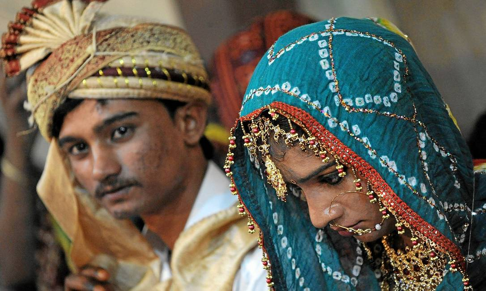
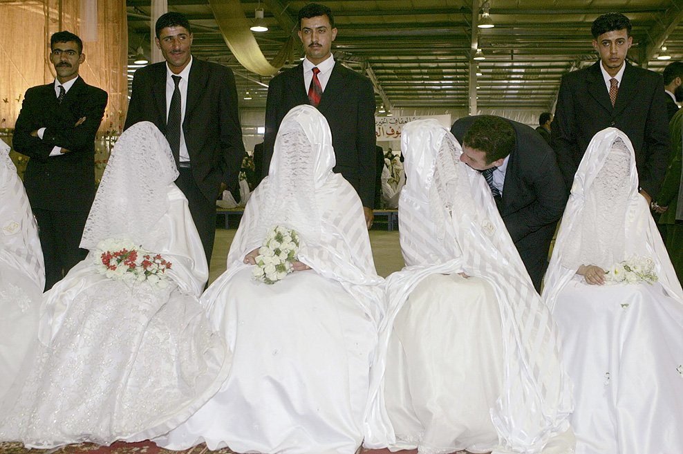

Olá,mundo. Tudo bem? seja bem-vindo ao meu mais novo "primeiro site" como você está? vou tentar aplicar aqui as coisas que eu aprendi nas aulas que eu não fui, rsrs.
Meu querido professor, quer que eu use os elementos, acredito que address e mark não vou estar sabendo usar,mas ele ai de me entender e eu irei tentar entender depois
| >Estou sem criatividade |
|---|
| coluna1 | coluna2 | coluna3 |
| não sei | fazer | tabela |
Além de alertar para o casamento infantil, a organização fez um ranking mostrando quais são os melhores e os piores países para uma menina viver. Há pouco mais de três anos, em setembro de 2013, o mundo se chocou com a morte de Rawan, uma menina de oito anos que foi forçada a casar com um homem de 40.
estão no topo da lista entre os locais onde a prática é assustadoramente corriqueira.Na época em que Rawan morreu, um levantamento realizado pelo Human Rights Watchrevelou que cerca de 52% das meninas se casam antes dos 18 anos no Iêmen, e 14% antes dos 15.
Segundo a matéria: "O Brasil ocupa o quarto lugar no mundo em número absoluto de crianças casadas. As esposas de 10 a 14 anos são 65 709; delas, 2,6 mil firmaram compromisso em cartório e/ou igreja."
e tantas outras mulheres que foram mortas por não aceitarem permanecer em uma relação violenta, por não aceitarem cumprir as regras ou expectativas de seus companheiros ou da sociedade, por serem vistas como objetos sexuais.